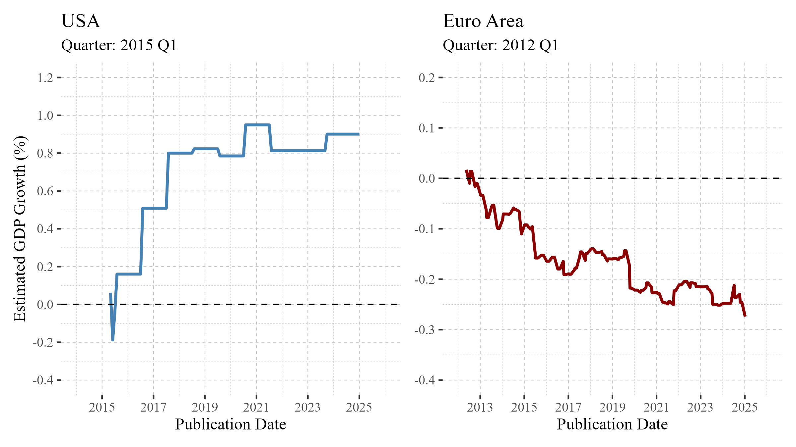
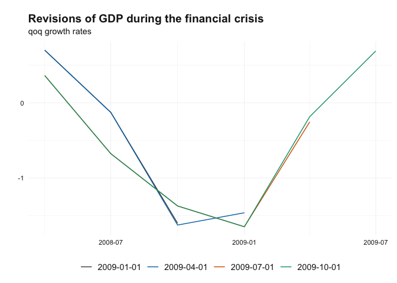

reviser is an R package designed for working with time-series vintages data. The package provides tools to clean, visualize, and analyze time-series revisions.
Why reviser?
Economic data often arrives in multiple waves—with initial estimates updated or revised as more complete information becomes available (See the vignette the role and importance of revisions). These revisions, while common, can have major implications for how economic conditions are perceived and how decisions are made by policymakers, analysts, and markets. Yet, tools to systematically analyze, visualize, and communicate these revisions are still limited. This is where the R package reviser comes in.
reviser is built to support transparent, reproducible workflows for tracking and interpreting data revisions. Whether you’re evaluating GDP estimates, inflation statistics, or high-frequency indicators, reviser helps quantify how vintages evolve, assess their reliability, and highlight cases where revisions may alter the economic narrative.
Real-world relevance
The importance of revisions isn’t just academic. They shape real-world outcomes:

US GDP 2015-Q1 — Weather or Weakness?: A sharp downward revision from +0.1% to -0.2% sparked fears of a slowdown—until a later benchmark revision lifted it back to +0.8%, highlighting challenges in seasonal adjustment.
Euro Area GDP in 2012Q1 — A Recession Delayed?: A flash estimate of 0.0% avoided the recession label—until it was revised to -0.1%, confirming back-to-back contractions and altering the policy discussion at a critical time.
These examples underscore how even small numerical changes can shift narratives, delay responses, and affect credibility.
reviser is an R package designed to streamline the analysis and visualization of data revisions—especially in the context of official statistics and macroeconomic indicators. Built with tidy principles and seamless integration in mind, reviser offers intuitive tools to compare data vintages, quantify revision patterns, and produce publication-ready outputs. Whether you’re tracking GDP estimate updates or evaluating forecast accuracy over time, reviser provides a robust and flexible framework tailored for economists, data analysts, and statistical agencies alike.
The reviser package provides a comprehensive toolkit for analyzing data revisions — crucial for anyone working with real-time data. It allows users to visualize, analyze, and evaluate the impact of data updates across different release vintages, helping to understand and analyze revision patterns.
Get started:
- Structure your data according to reviser conventions. See the get started vignette
Key features include:
Calculate revisions across vintages using
get_revisions(). See the vignette Understanding Data Revisions to learn how to structure and compute revision tables.Analyze revision patterns and evaluate revision accuracy and bias using
get_revision_analysis(). For more, read the vignette Revision Patterns and Statistics.Detect the first efficient release, i.e., the earliest vintage that closely matches the final values, with
get_first_efficient_release(). See the vignette Efficient Release Identification.Nowcast future data revisions using
kk_nowcast()andjvn_nowcast(), tools to anticipate upcoming changes to early releases. Explore the methodology in the vignettes Nowcasting revisions using the generalized Kishor-Koenig family and Nowcasting revisions using the Jacobs-Van Norden model.
Installation
Install the released version from CRAN with:
install.packages("reviser")You can also install the rOpenSci build from R-universe with:
install.packages(
"reviser",
repos = c("https://ropensci.r-universe.dev", "https://cloud.r-project.org")
)You can install the development version from GitHub with:
remotes::install_github("ropensci/reviser")Usage
The following example analyzes GDP data revisions for the United States by transforming the data into a format suitable for vintage analysis, visualizing revisions during the financial crisis, and assessing how early estimates compare to the final release. It then identifies the point at which the estimates become stable and reliable.
library(reviser)
library(dplyr)
gdp <- gdp |>
filter(id == "US") |>
tsbox::ts_pc() |>
tsbox::ts_span(start = "1980-01-01")
gdp_wide <- vintages_wide(gdp)
gdp_long <- vintages_long(gdp_wide, keep_na = FALSE)
plot_vintages(
gdp_long |>
filter(
pub_date >= as.Date("2009-01-01") & pub_date < as.Date("2010-01-01"),
time < as.Date("2010-01-01") & time > as.Date("2008-01-01")
),
type = "line",
title = "Revisions of GDP during the financial crisis",
subtitle = "qoq growth rates")
final_release <- get_nth_release(gdp_long, n = 10)
df <- get_nth_release(gdp_long, n = 0:6)
summary <- get_revision_analysis(df, final_release)
print(summary)
#>
#> === Revision Analysis Summary ===
#>
#> # A tibble: 7 × 14
#> id release N `Bias (mean)` `Bias (p-value)` `Bias (robust p-value)`
#> <chr> <chr> <dbl> <dbl> <dbl> <dbl>
#> 1 US release_0 168 -0.014 0.488 0.52
#> 2 US release_1 168 -0.015 0.393 0.425
#> 3 US release_2 168 -0.013 0.484 0.507
#> 4 US release_3 168 -0.003 0.86 0.851
#> 5 US release_4 168 -0.014 0.308 0.326
#> 6 US release_5 168 -0.021 0.124 0.181
#> 7 US release_6 168 -0.018 0.116 0.202
#> # ℹ 8 more variables: Minimum <dbl>, Maximum <dbl>, `10Q` <dbl>, Median <dbl>,
#> # `90Q` <dbl>, MAR <dbl>, `Std. Dev.` <dbl>, `Noise/Signal` <dbl>
#>
#> === Interpretation ===
#>
#> id=US, release=release_0:
#> • No significant bias detected (p = 0.52 )
#> • Moderate revision volatility (Noise/Signal = 0.22 )
#>
#> id=US, release=release_1:
#> • No significant bias detected (p = 0.425 )
#> • Moderate revision volatility (Noise/Signal = 0.202 )
#>
#> id=US, release=release_2:
#> • No significant bias detected (p = 0.507 )
#> • Moderate revision volatility (Noise/Signal = 0.205 )
#>
#> id=US, release=release_3:
#> • No significant bias detected (p = 0.851 )
#> • Moderate revision volatility (Noise/Signal = 0.194 )
#>
#> id=US, release=release_4:
#> • No significant bias detected (p = 0.326 )
#> • Moderate revision volatility (Noise/Signal = 0.157 )
#>
#> id=US, release=release_5:
#> • No significant bias detected (p = 0.181 )
#> • Moderate revision volatility (Noise/Signal = 0.152 )
#>
#> id=US, release=release_6:
#> • No significant bias detected (p = 0.202 )
#> • Moderate revision volatility (Noise/Signal = 0.13 )
efficient_release <- get_first_efficient_release(df, final_release)
summary(efficient_release)
#> Efficient release: 0
#>
#> Model summary:
#>
#> Call:
#> stats::lm(formula = formula, data = df_wide)
#>
#> Residuals:
#> Min 1Q Median 3Q Max
#> -0.89186 -0.12669 0.02046 0.11475 0.97986
#>
#> Coefficients:
#> Estimate Std. Error t value Pr(>|t|)
#> (Intercept) 0.00299 0.02223 0.134 0.893
#> release_0 0.97412 0.01692 57.567 <2e-16 ***
#> ---
#> Signif. codes: 0 '***' 0.001 '**' 0.01 '*' 0.05 '.' 0.1 ' ' 1
#>
#> Residual standard error: 0.2518 on 166 degrees of freedom
#> (10 Beobachtungen als fehlend gelöscht)
#> Multiple R-squared: 0.9523, Adjusted R-squared: 0.952
#> F-statistic: 3314 on 1 and 166 DF, p-value: < 2.2e-16
#>
#>
#> Test summary:
#> Linear hypothesis test
#>
#> Hypothesis:
#> (Intercept) = 0
#> release_0 = 1
#>
#> Model 1: restricted model
#> Model 2: final ~ release_0
#>
#> Note: Coefficient covariance matrix supplied.
#>
#> Res.Df Df F Pr(>F)
#> 1 168
#> 2 166 2 1.9283 0.1486Comparison to rjd3revisions
The reviser package sets itself apart from rjd3revisions not only through its focus on advanced analysis of efficient releases and nowcasting performance, but also in its pure R implementation, which avoids external dependencies. In contrast, rjd3revisions relies heavily on Java via the JDemetra+ platform, which can make setup and integration more complex. reviser offers a lightweight, R-native solution for revision analysis, combining user-friendly tools for data wrangling, visualization, and evaluation of release efficiency.
Contributing
Contributions are encouraged and appreciated. If you’re uncertain about opening a pull request, consider starting with an issue to discuss your proposal. For more information, please refer to CONTRIBUTING.
Please note that the reviser project follows the rOpenSci Code of Conduct. By contributing to this project, you agree to abide by its terms.
Citation
Burri M, Wegmueller P (2026). reviser: Analyzing Revisions in Real-Time Time Series Vintages. R package version 0.3.0, https://docs.ropensci.org/reviser/.